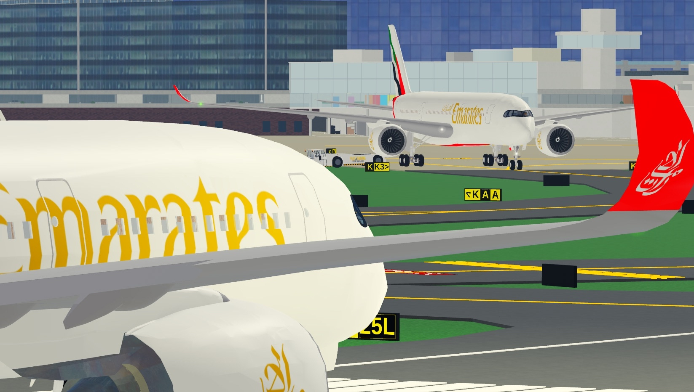
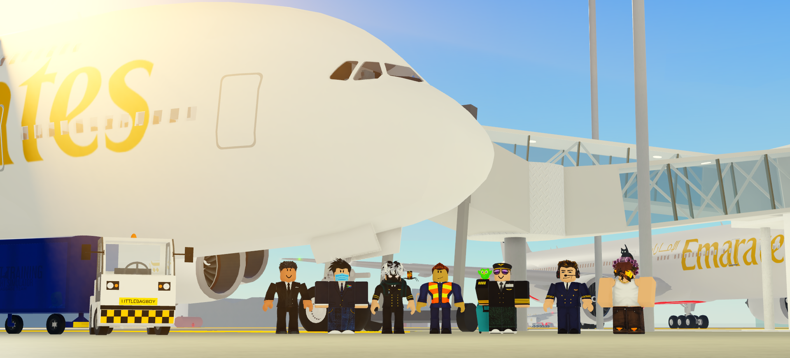
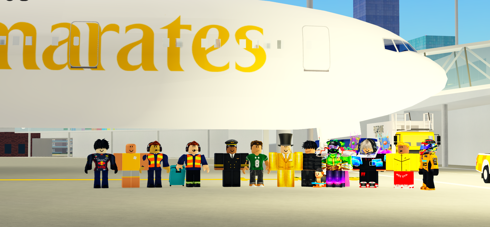
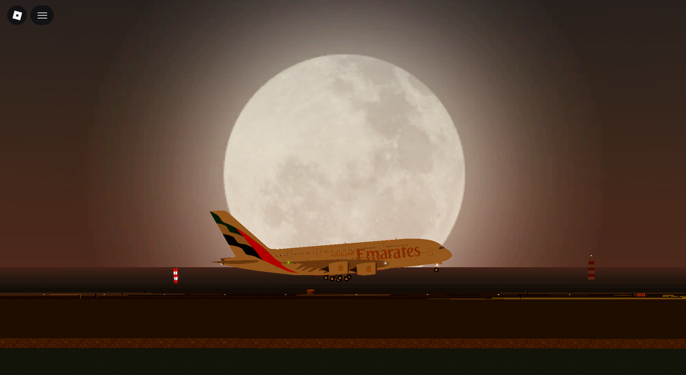
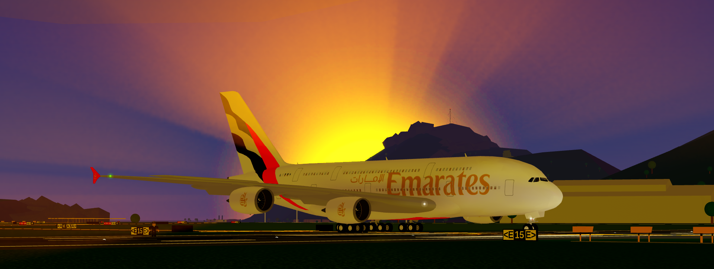
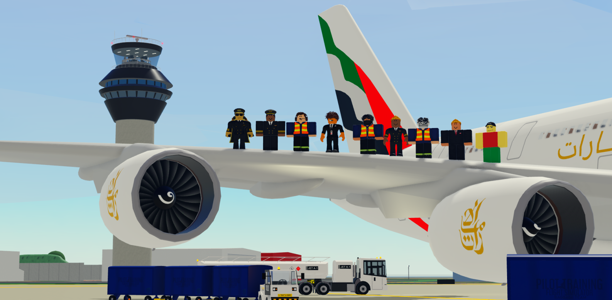
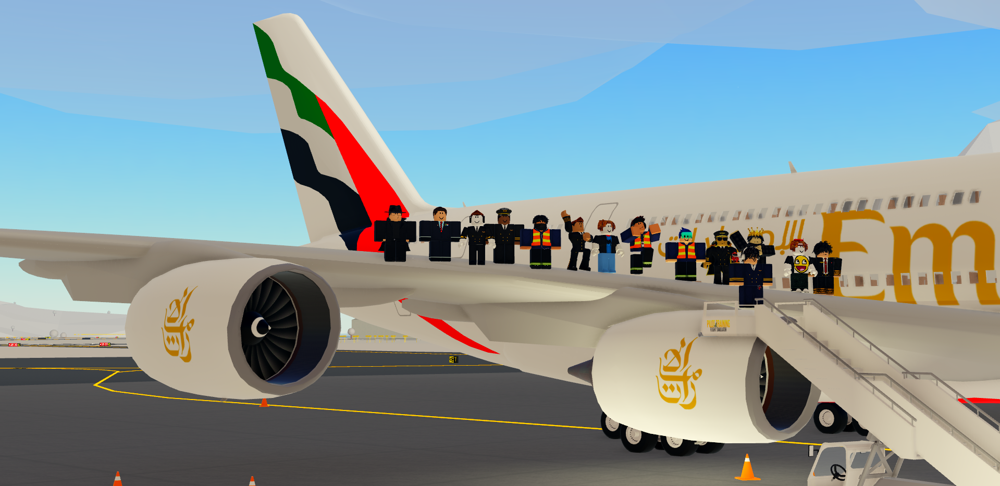
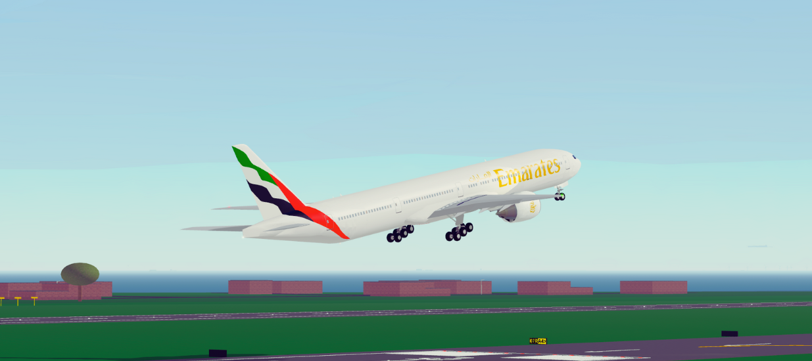
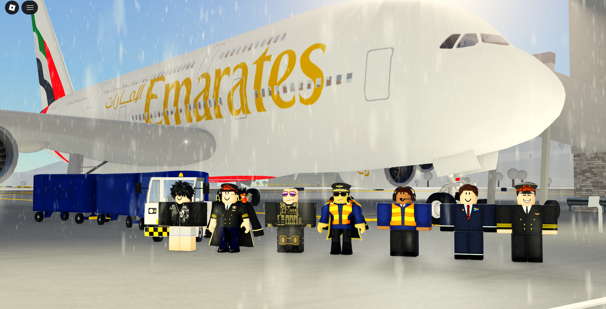
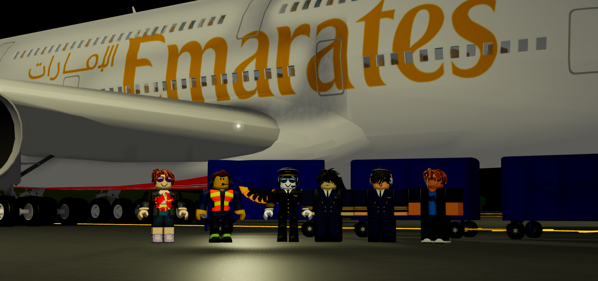

About Emirates PTFS
The route
is yours.
A premium flight simulation community built around realistic operations, welcoming people and the joy of flying together.
Why we fly
Real routes.
Real people.
Emirates PTFS brings the rhythm of a real airline into the world of flight simulation. Join scheduled sectors, learn the operation and make every departure feel like it matters.
Authentic procedures, considered dispatch and the details that make a route feel alive.
Meet pilots, dispatchers and aviation enthusiasts who enjoy sharing the flight deck.
Take off from Dubai and connect with destinations, events and people across the map.
From the flight deck
Moments between
the departures.
A look at the aircraft, routes and community moments that make Emirates PTFS feel like more than a schedule.









